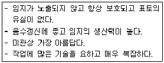
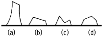
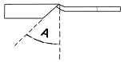
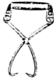
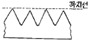

산림기능사 (2002-04-07 기출문제)
1과목: 조림 및 육림기술
1. 다음 수종 중 천연갱신이 용이한 수종은?
- 잣나무
- 낙엽송
- 소나무
- 가래나무
(정답률: 74%)

2. 종자 채집 시기가 7월 중에 적합한 수종은?
- 오리나무
- 벚나무
- 졸참나무
- 아카시아
(정답률: 82%)
3. 1급목 중 가장 큰 것, 때로는 1급목의 전부와 5급목을 벌채 하는 간벌법은?
- 택벌식 간벌
- 기계적 간벌
- 하층 간벌
- 자유 간벌
(정답률: 68%)
4. 삼림을 가꾸기 위한 벌채(撫育伐)에 속하는 것은?
- 택벌작업
- 산벌작업
- 간벌작업
- 중림작업
(정답률: 53%)
5. 삼림의 효용 중 휴양 기능에 속하는 것은?
- 홍수를 방지한다.
- 수원을 조절한다.
- 향료, 약품, 조미료 등을 공급한다.
- 공기를 정화한다.
(정답률: 88%)
6. 제벌작업에서 제거대상목이 아닌 것은?
- 열등형질목
- 침입목 또는 가해목
- 하층식생
- 폭목
(정답률: 80%)
7. 정방형 식재를 옳게 설명한 것은?
- 정방형 식재는 식재 간격과 식재 공간을 계산하기 어렵다.
- 정방형 식재는 식재작업이 불편하다.
- 정방형 식재에 포플러나 낙엽송 등 양수 수종은 알맞지 않다.
- 정방형 식재는 묘간거리와 열간거리가 같은 식재 방법이다.
(정답률: 86%)
8. 산림 보육작업 시 보육 대상목(가치 있는 수종)으로 볼 수없는 것은?
- 소나무
- 참나무
- 박달나무
- 버드나무
(정답률: 68%)
9. 전나무류의 결실이 시작되는 연령은?
- 약 15년
- 약 20년
- 약 30~40년
- 약 60~70년
(정답률: 40%)
10. 종자 수득율이 가장 높은 것은?
- 잣나무
- 향나무
- 박달나무
- 호두나무
(정답률: 71%)
11. 파종상에서 그대로 2년을 지낸 묘목의 연령표시법이 옳은 것은?
- 1~1묘
- 2~0묘
- 1/1묘
- 2~1묘
(정답률: 87%)
12. 군상개벌작업 시 군상지의 크기는 3-10a로 하는 데 보통 몇 년 간격으로. 군상지를 벌채하는가?
- 2~3년
- 4~5년
- 6~7년
- 8~10년
(정답률: 61%)
13. 잔존본수 400그루, 득묘율 30%, 종자효율 70%, 1ｇ당 종자알수가 150개 일 때의 m2당 파종량은?
- 8.8ｇ
- 12.5ｇ
- 12.7ｇ
- 13.8ｇ
(정답률: 49%)
14. 다음 중 삽목이 잘되는 수종끼리만 짝지어진 것은?
- 버드나무, 잣나무
- 개나리, 소나무
- 오동나무, 느티나무
- 사철나무, 미류나무
(정답률: 81%)
15. 다음의 특징을 갖는 작업종은?

- 산벌작업
- 택벌작업
- 모수작업
- 중림작업
(정답률: 69%)
16. 따뜻한 기후를 좋아하며 죽순의 맛이 좋아 죽순대라고 도하는 대나무는?
- 맹종죽
- 참대
- 왕대
- 솜대
(정답률: 68%)
17. 단순림으로 구성된 수종은?
- 소나무와 참나무로 구성된 산림이다.
- 소나무로 구성된 산림이다.
- 낙엽송, 소나무로 구성된 산림이다.
- 잣나무와 참나무로 구성된 산림이다.
(정답률: 84%)
18. 다음 작업종 중 국토보존 및 지력유지에 가장 적합한 작업종은?
- 택벌작업
- 왜림작업
- 중림작업
- 개벌작업
(정답률: 65%)
19. 맹아를 위한 줄기베기의 그림이다. 가장 적합한 것은?

- (a)
- (b)
- (c)
- (d)
(정답률: 85%)
20. 우량종자의 선발요령이 아닌 것은?
- 물에 담그었을 때 뜨는 것
- 광택이나 윤기가 나는 것
- 오래되지 않은 것
- 알이 알차고, 완숙한 것
(정답률: 88%)
21. 다음 중 묘포장에서 해가림이 필요하지 않은 수종은?
- 잣나무
- 전나무
- 낙엽송
- 상수리
(정답률: 54%)
22. 가식에 대한 설명 중 틀린 것은?
- 가식할 장소는 배수가 잘 되고 습기가 있는 곳을 선정하되 과습지는 피할 것
- 가식은 대부분 점상으로 한다.
- 가식 시 묘목의 끝이 가을에는 남쪽으로 향하도록 한다.
- 가식 시 묘목의 끝이 봄에는 북쪽으로 향하도록 한다.
(정답률: 77%)
23. 묘목을 식재지까지 운반하기 위하여 알맞는 크기로 포장을 한다. 이것을 곤포(packing)라고 하는데 낙엽송 2년생 묘목을 포장할 때 속당 본수와 곤포당 속수로 알맞는 항목은?
- 속당 본수 10본, 곤포당 속수 100속
- 속당 본수 20본, 곤포당 속수 50속
- 속당 본수 20본, 곤포당 속수 100속
- 속당 본수 50본, 곤포당 속수 100속
(정답률: 64%)
24. 다음 중 우량 묘가 갖추어야 할 조건이 아닌 것은?
- 발육이 왕성하고 신초의 발달이 양호 할 것
- 우량한 유전성을 지닐 것
- 측근과 세근의 발달이 많은 것
- 침엽수는 줄기가 곧고 하아지(夏芽枝)가 발달한 것
(정답률: 78%)
25. 용기묘(pot)의 장, 단점에 대한 설명 중 틀린 것은?
- 제초작업이 생략 될 수 있다.
- 모포의 적지조건, 식재시기 등이 문제가 되지 않는다.
- 묘목의 생산비용이 많이 들고 관수가 까다롭다.
- 운반이 용이하여 운반비용이 적게 든다.
(정답률: 74%)
2과목: 산림보호
26. 다음 병해 중 생리적인 병해인 것은?
- 대나무 개화병
- 낙엽송 가지끝마름병
- 소나무 잎떨림병
- 뿌리썩음병
(정답률: 77%)
27. 잣나무 털녹병(毛銹病)의 병징 및 표징은 줄기에 나타난다. 병원균의 침입 부위는 어디인가?
- 잎
- 줄기
- 종자
- 뿌리
(정답률: 72%)
28. 묘포장에서 많이 발생하는 모잘록병 방제법으로 적당치 않은 것은?
- 토양소독 및 종자소독을 한다.
- 돌려짓기를 한다.
- 질소질 비료를 많이 준다.
- 솎음질을 자주하여 생립본수(生立本數)를 조절한다.
(정답률: 81%)
29. 포플러 잎녹병을 방제하는 방법 중 옳지 않은 것은?
- 저항성 클론(clone)을 심는다.
- 보르도액을 포자 비산시기에 살포한다.
- 병든 잎이 달렸던 가지를 잘라준다.
- 중간기주류와 멀리 떨어진 곳에 식재한다.
(정답률: 64%)
30. 다음 중 천공성 해충이 아닌 것은?
- 밤바구미, 박쥐나방
- 소나무좀, 오리나무좀
- 하늘소, 버들바구미
- 밤나무순혹벌, 솔잎혹파리
(정답률: 55%)
31. 1년에 2회 발생하며 포플러 등의 활엽수 160여종의 잎을 먹어 많은 피해를 주는 해충은?
- 텐트나방
- 미국흰불나방
- 오리나무 잎벌레
- 밤나무순혹벌
(정답률: 70%)
32. 솔나방 유충은 몇 령충으로 월동하는가?
- 1령충
- 3령충
- 5령충
- 8령충
(정답률: 75%)
33. 응애 구제에 쓰이는 농약은?
- 만코지수화제(다이센엠 45)
- 디코폴유제(켈센)
- 메타유제(메타시스톡스)
- 메프수화제(스미치온)
(정답률: 42%)
34. 다음의 산림 해충 방제 방법 중 생물적 방제법에 속하지 않는 것은?
- 병원 미생물의 증식 이용
- 천적 곤충의 보호 이용
- 식충 조류의 보호 이용
- 혼효림 조성 및 내충성 수종 선정
(정답률: 73%)
35. 파이토플라스마에 의한 수병이 아닌 것은?
- 붉나무빗자루병
- 벚나무빗자루병
- 오동나무빗자루병
- 대추나무빗자루병
(정답률: 70%)
36. 다음 중 소나무류의 목질부에 기생하여 치명적인 피해를 주며 자체적으로 이동 능력이 없어 매개충인 솔수염하늘소에 의해 전파되는 것은?
- 소나무재선충
- 소나무좀
- 솔잎혹파리
- 솔껍질깍지벌레
(정답률: 70%)
37. 다음 산림화재 중에서 가장 흔히 일어나는 산불은?
- 지중화
- 지표화
- 수관화
- 수간화
(정답률: 74%)
38. 다음 중 묘상의 서릿발의 피해를 막기 위한 방법으로 적당하지 않은 것은?
- 모래나 유기물을 섞어 토질을 개량한다.
- 배수를 좋게 하여 토양수분을 감소시킨다.
- 점토질 토양을 섞어 토질을 개선하여 준다.
- 짚이나 왕겨 또는 낙엽 등으로 덮어준다.
(정답률: 73%)
39. 다음 중 대기오염의 임업적 방제법이 아닌 것은?
- 대기오염에 강한 수종으로 조림한다.
- 대면적의 개벌을 통하여 일시적인 조림을 한다.
- 조림 시에는 혼효림을 조성한다.
- 내연성이 강하고 여러 번 이식을 한 대묘를 조림한다.
(정답률: 71%)
40. 다음 살충제 중 가장 친환경적인 농약은?
- 비티수화제
- 디프수화제
- 베스트수화제
- 메프수화제
(정답률: 69%)
3과목: 임업기계일반
41. 도끼자루로 가장 적합한 수종은?
- 소나무
- 잣나무
- 참나무
- 포플라
(정답률: 76%)
42. 체인톱 엔진에 있어 크랭크축이 몇 회 회전 시 마다 1회의 폭발, 배기 행정이 일어나는가?
- 1회
- 2회
- 3회
- 4회
(정답률: 70%)
43. 체인톱 기화기에 있어 공기를 유입시키거나 닫아 주는 판은 몇 개가 있는가?
- 1개
- 2개
- 3개
- 4개
(정답률: 55%)
44. 체인톱의 안내판과 체인의 수명을 나타낸 것 중 가장 옳은 것은?
- 150시간과 300시간
- 300시간과 450시간
- 450시간과 150시간
- 500시간과 300시간
(정답률: 76%)
45. 아래 그림은 기계톱 체인의 날부위를 위에서 내려다보는 그림이다. 그림의 각도를 창날각이라고 한다. 이 각도 (A)는 몇 도의 크기로 갈아주어야 적합한가?

- 20°
- 35°
- 40°
- 65°
(정답률: 75%)
46. 산림작업 장비의 보관 방법이 틀린 것은?
- 오물을 제거하고 깨끗하게 한다.
- 일일정비 후 지하실이나 밀폐된 곳에 보관한다.
- 건조하고 신선한 곳에 보관한다.
- 장시간 보관할 때는 연료를 넣어두지 않는 것이 좋다.
(정답률: 87%)
47. 체인톱 일일 정비의 대상이 아닌 것은?
- 에어휠터(공기청정기)
- 안내판 오일 주입구
- 체인 날갈기
- 플라그 전극 간격 조정
(정답률: 78%)
48. 아래 그림과 같은 도구는 어떤 경우에 사용하는가?

- 소경재 인력 집재
- 대경재 인력 집재
- 통나무 적재
- 벌도목의 방향유도
(정답률: 77%)
49. 손톱의 톱니 높이가 아래 그림과 같이 모두 같지 않을 경우 어떤 현상이 나타나는가?

- 톱이 목재 사이에 낀다.
- 잡아당기고 미는데 힘이 든다.
- 잡아당기고 밀기가 용이하다.
- 톱의 수명이 단축된다.
(정답률: 74%)
50. 체인톱에서 쵸크 나사는 어떠한 역할을 하는가?
- 연료 펌프 조정
- 오일펌프 조정
- 시동 시 냉각공기량 차단
- 공전 시 공기주입량 차단
(정답률: 61%)
51. 체인톱 엔진이 고속 상태에서 갑자기 정지하였다. 그이유로 가장 적합한 것은?
- 연료탱크가 비어있다.
- 에어필터가 더럽혀 있다.
- 기화기 조절이 잘못되어 있다.
- 클러치가 손상되어있다.
(정답률: 70%)
52. 2행정 내연기관에서 외부의 공기가 크랭크실로 유입될 수 있는 원리는?
- 피스톤의 흡입력
- 기화기의 공기펌프
- 크랭크실과 외부와의 기압차
- 크랭크축의 원운동
(정답률: 69%)
53. 체인 톱날을 연마하고자 한다. 필요 없는 것은?
- 평줄
- 원형줄
- 깊이제한척
- 반원형줄
(정답률: 61%)
54. 산림작업 중에서 사고율이 가장 높은 작업공종은 어느 것인가?
- 조림작업
- 육림작업
- 임도시설작업
- 임목수확작업
(정답률: 78%)
55. 2행정기관의 특징이 아닌 것은?
- 동일 배기량에 비해 출력이 크다.
- 저속운전이 용이하다.
- 흡입기간이 짧고 기동(시동)이 곤란하다.
- 점화가 어렵다.
(정답률: 69%)
56. 다음 중 벌목도구의 사용법을 설명한 것으로 틀린 것은?
- 목재돌림대는 벌목 중 나무에 걸려있는 벌도목과 땅 위에 있는 벌도목의 방향전환 및 돌리는 작업에 주로 사용된다.
- 지렛대와 밀게는 밀집된 간벌지에서 벌도방향 유인과 잘린나무 방향전환에 유용하게 사용된다.
- 쐐기는 벌도목의 벌도방향유도에 사용한다.
- 집게, 스웨디쉬 갈고리는 기울어진 나무의 방향전환에 주로 사용되는 방향 갈고리이다.
(정답률: 56%)
57. 다음 중 내연기관에 속하지 않는 것은?
- 디젤기관
- 가솔린기관
- 로킷기관
- 증기기관
(정답률: 72%)
58. 산림작업용 예불기로 6시간 작업하려면 혼합연료 소요량은 얼마인가?
- 2L
- 3L
- 20L
- 30L
(정답률: 72%)
59. 우리나라 여름철에 체인톱 사용 시 혼합유 제조를 위한 윤활유 점액도가 가장 알맞은 것은?
- SAE 20
- SAE 30
- SAE 20 W
- SAE 30 W
(정답률: 72%)
60. 예불기 작업 방법으로 가장 올바른 것은?
- 소경재를 절단할 때는 수평으로 절단한다.
- 예불기의 톱날은 지상으로부터 20㎝∼30㎝의 높이에 위치하는 것이 적당하다.
- 1년생 잡초 및 초년생 관목베기의 작업폭은 1.5m가 적당하다.
- 항상 왼발을 앞으로 하고 전진할 때는 오른발을 앞으로 이동시킨다.
(정답률: 46%)